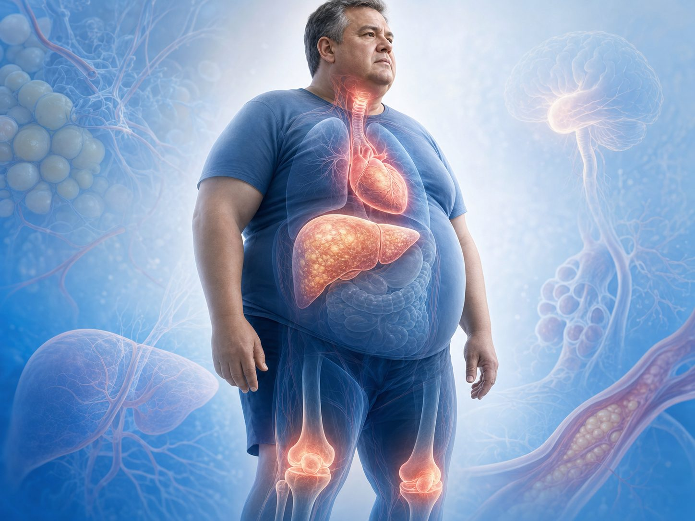
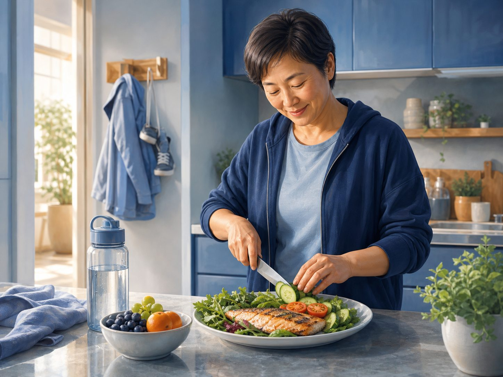

이제 비만약 선택은 '어느 약이 더 세냐'가 아니라 '목표와 합병증이 무엇인가'다.
62 RCT · 2025.11.21까지의 새 근거를 반영한 living guidance 업데이트.
20.2% vs 13.7% · Tirzepatide vs semaglutide 72주 평균 체중감량.
Semaglutide · 2026 업데이트에서 fibrosis stage improvement 근거는 semaglutide가 더 강함.
EASO는 알고리즘을 universal ranking이나 처방 순서로 읽지 말라고 명시했다. 환자 특성, 선호, 비용, 안전성을 함께 본다.

체중감량 주목표와 MASH 영역에서 근거 분리가 더 선명해졌다.
합병증 없는 비만에서 체중감량 자체가 주목표일 때 근거가 더 강해졌다.
직접 비교 RCT로 tirzepatide의 평균 감량 폭과 목표 달성률 우위 확인.
MASH remission은 semaglutide 또는 tirzepatide, fibrosis stage improvement는 semaglutide 근거가 더 강함.
알고리즘은 처방 순서표가 아니라 합병증-목표 기반 의사결정 도구.
향후 업데이트에서 중단율·이상반응 등 benefit-risk 영역이 강화될 전망.
새 약제·경구제·장기 outcome이 나오면 계속 바뀌는 구조.
환자에게 '몇 kg'보다 '목표 감량률 달성 가능성'으로 설명하면 명확하다.
| 핵심 항목 | 값 |
|---|---|
| 평균 감량 Tirzepatide | −20.2% |
| 평균 감량 Semaglutide | −13.7% |
| ≥20% 달성 Tirzepatide | 48.4% |
| ≥20% 달성 Semaglutide | 27.3% |
평균 차이 6.5%p. BMI 35 이상 또는 20% 이상 감량이 필요한 군에서 임상적으로 크다.
Open-label trial이며 안전성 비교에 powered 된 연구는 아니다.
환자에게 먼저 물을 질문은 '얼마나 빼야 합병증이 좋아지는가'다.
5-10% · 초기 대사 개선 · 혈당·혈압·지질 개선 목적. 생활요법+약물 선택 폭 넓음. · 10-15% · Semaglutide zone · GLP-1RA 단독으로 충분한 목표. CV 보호 근거도 고려. · 15-20% · 공유 의사결정 · tirzepatide 우선 검토. 비용·부작용·선호도 함께 평가. · ≥20% · Tirzepatide zone · 고도비만·OSA·큰 기계적 부담이 있으면 우선 고려. · BARIATRIC · 수술/다학제 · 약물만으로 부족한 BMI·합병증은 수술 포함 평가.
체중감량률만 보지 말고, 어떤 합병증을 함께 치료하려는지 본다.
| 합병증/목표 | Tirzepatide | Semaglutide | 실무 포인트 |
|---|---|---|---|
| 체중감량 주목표 | 근거 우위 | 강함 | 큰 감량 필요 시 tirzepatide 우선 검토 |
| 심혈관 보호 | outcome 진행 중/제한 | SELECT 등 근거 | ASCVD 동반이면 semaglutide 근거가 강점 |
| OSA + 비만 | 강점 | 자료 제한 | 기계적 감량 효과가 중요 |
| MASH remission | 가능 | 사용 가능 | 둘 다 고려 가능 |
| MASH fibrosis | 덜 성숙 | 근거 더 강함 | fibrosis 개선 목표면 semaglutide 쪽 근거 확인 |

EASO가 직접 강조한 부분이다. 환자별 맥락이 처방을 바꾼다.
직접 비교는 일부 — 많은 비교는 NMA와 별도 RCT 기반 · 합병증별 endpoint — 체중, MACE, OSA, MASH가 서로 다름 · 부작용과 중단율 — efficacy만으로 결정 불가 · 가격·접근성 — 실제 치료 지속 가능성을 좌우
목표 감량률 — 10%, 15%, 20% 중 어디인가 · 동반질환 — T2D, ASCVD, OSA, MASH, 관절염 · 이전 경험 — GLP-1RA 부작용·중단 이력 · 비용/선호 — 주사제 수용성과 장기 비용 · 상담 문장 —'더 잘 빠지는 약' 하나로 끝내지 말고, 목표와 동반질환에 맞는 약을 고른다.
약제명을 고르기 전에 목표와 위험을 고정한다.
BMI, 허리둘레, 혈압, A1c, 지질, 간수치, 수면무호흡 증상.
3개월·6개월·12개월 목표 감량률과 합병증 목표를 수치화.
tirzepatide/semaglutide/기타 약물, 금기, 비용, 선호도 검토.
용량 증량, 위장관 부작용, 근손실 예방, 중단 기준을 사전 설명.
감량 폭이 커도 중단하면 만성질환 치료가 아니다.
01 · 위장관 부작용 · 오심·구토·변비·설사. 증량 속도와 식사 패턴 조정이 핵심. · 02 · 담낭/췌장 · 담석·췌장염 증상 교육. 심한 지속 복통은 즉시 평가. · 03 · 근손실 · 단백질·저항운동 없으면 체중은 줄어도 기능은 떨어질 수 있음. · 04 · 비용 · 장기 지속 비용을 시작 전에 확인. 중단 후 재증가 가능성 설명. · 05 · 금기 · MTC/MEN2 병력, 임신 계획, 중증 위장관 질환 등 확인. · 06 · 추적 · 체중·허리둘레·A1c·간수치·증상 지표를 같은 방식으로 반복 측정.

공식 권고를 과장하지 않고, 근거의 강점을 진료실 언어로 바꾼다.
≥20% 감량 목표 또는 BMI 35 이상 고도비만 · OSA·관절부하 등 기계적 체중 부담이 핵심 · 기존 GLP-1RA 반응 부족 또는 목표 미달 · 큰 허리둘레 감소가 필요한 대사위험군
10-15% 목표로 충분한 환자 · ASCVD 위험에서 CV outcome 근거를 중시 · MASH fibrosis 개선 근거를 우선 고려 · 약제 접근성·비용에서 현실성이 높은 경우 · 중립 문장 —'체중 감량 폭은 tirzepatide가 더 크지만, 심혈관·간질환 등 목표에 따라 semaglutide 근거가 더 중요할 수 있습니다.'
환자 질문은 대개 '삭센다/위고비/마운자로 중 뭐가 좋나'로 들어온다.
| 환자상 | 우선 질문 | 약물 방향 | 추적 지표 |
|---|---|---|---|
| BMI 30-34 | 목표 10-15%? | semaglutide 또는 tirzepatide | 체중·허리·A1c |
| BMI ≥35 | 20% 이상 필요? | tirzepatide 우선 검토 | OSA·관절·지방간 |
| ASCVD 동반 | CV 보호가 핵심? | semaglutide 근거 강조 | MACE risk·BP·LDL |
| MASH/fibrosis | 섬유화 개선 목표? | semaglutide 근거 확인 | FIB-4·FibroScan·ALT |
| 비용 민감 | 지속 가능? | 저비용 약제/생활요법 병행 | 중단 위험·재증가 |
약물 선택을 단순 경쟁 구도로 만들면 장기 치료 설계가 깨진다.
체중감량 우위는 명확하지만, 모든 합병증에서 universal first-line이라는 뜻은 아니다.
ASCVD outcome과 MASH fibrosis 영역에서 중요한 근거가 있다.
몇 % 감량을 목표로 하는지 정하지 않으면 약제 평가가 불가능.
오심·변비·담낭·췌장 증상은 시작 전 교육해야 중단을 줄인다.
근손실 예방 없이는 체중감량의 질이 떨어진다.
비만은 만성질환. 중단 후 재증가와 유지 전략을 사전에 논의.
핵심 결과와 한계를 함께 확인합니다.
01 · 큰 감량 목표 — ≥20% 감량이 필요하면 tirzepatide 근거가 가장 설득력 있다. · 02 · 합병증 목표 — ASCVD·MASH fibrosis 등은 semaglutide 근거가 선택을 바꿀 수 있다. · 03 · 알고리즘은 순위표가 아니다 — 환자 특성·선호·비용·부작용을 함께 본다. · 04 · 장기 치료로 설명 — 증량, 부작용, 근손실 예방, 중단 후 유지까지 시작 전에 말한다. · CLINIC NOTE · 광교바른내과 · 의료진 논문 리뷰 · 국내 허가, 공급, 급여, 약가는 시점에 따라 바뀔 수 있어 실제 처방 전 최신 정보를 확인해야 합니다. · 온라인 슬라이드 · QR 스캔